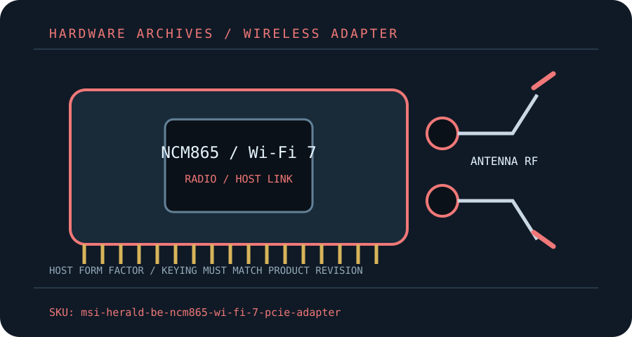

[ MODEL-SPECIFIC M.2 / PCIE WI-FI HARDWARE ]
MSI Herald-BE NCM865 Wi-Fi 7 PCIe Adapter
A Qualcomm NCM865-based Wi-Fi 7 desktop card with tri-band 2×2 radio and Bluetooth 5.4.
IDENTIFICATION: Match the full model, hardware revision, regulatory region and radio-module label before ordering replacements or selecting drivers. Values are manufacturer specifications, not a guaranteed measurement.

Dedicated wireless specifications
| Cataloged product | MSI Herald-BE NCM865 Wi-Fi 7 PCIe Adapter |
|---|---|
| Chipset / radio module | Qualcomm NCM865 Wi-Fi 7 radio module (as named by MSI); verify the card revision/module label before replacement. |
| Wi-Fi generation / standards | Wi-Fi 7 / 802.11be, backward compatible with Wi-Fi 6/6E and earlier supported standards. |
| Radio bands, channels & width | 2.4 GHz, 5 GHz and 6 GHz; 320 MHz 6 GHz channels and MLO need compatible AP/driver and are region restricted. |
| Spatial streams / nominal link rates | 2×2; nominal multi-band peak class up to approximately 5.8 Gb/s. Separate band rates are not additive for ordinary single-link traffic. |
| Host interface / form factor / keying | PCIe x1 host adapter; Bluetooth uses the supplied internal USB 2.0 header cable. A free USB header is needed in addition to the PCIe slot. |
| Antenna connectors | External two-path antenna assembly; connect the supplied threaded RF leads and verify the exact connector mating standard from the card/manual before replacement. |
| Bluetooth | Bluetooth 5.4; enable the USB header connection and install the MSI/Qualcomm Bluetooth driver. |
| Operating-system / driver compatibility | MSI documentation targets supported Windows 11 systems; use the exact package from the MSI support page. Other OS support depends on kernel/firmware and is not guaranteed by MSI. |
| Regulatory and host caveats | Wi-Fi 7 320 MHz/6 GHz use is limited by national allocation and indoor/outdoor rules. Check driver release notes, secure boot/signing requirements and antenna clearance. MLO and high modulation require the peer AP and current software to support them. |
Model-specific installation notes
Install only with the host powered down and follow the manufacturer’s manual for slot, cable, antenna and ESD precautions. Fit and electrical compatibility are separate questions: the host must support the stated interface, firmware and driver for this exact SKU.
Nominal PHY rates vary with channel width, modulation, signal quality, regulatory domain, AP capabilities and concurrent client traffic. They are not measured Internet or application throughput. Confirm local 6 GHz/5 GHz channel permissions before deployment.
Manufacturer sources
- MSI Herald-BE NCM865 specificationsMSI model specifications and driver/platform notes.
- MSI Herald-BE NCM865 datasheetMSI-hosted product datasheet for the NCM865 adapter.
Source pages can be regional or revision-specific. Use the exact manufacturer page and package matching the label on the adapter and host.